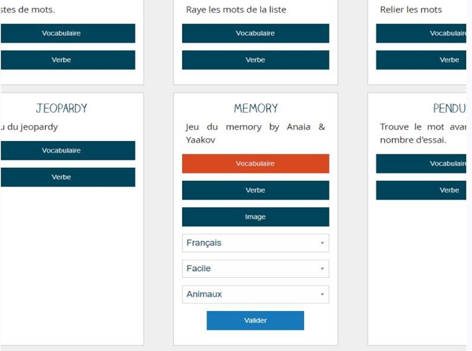
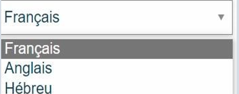
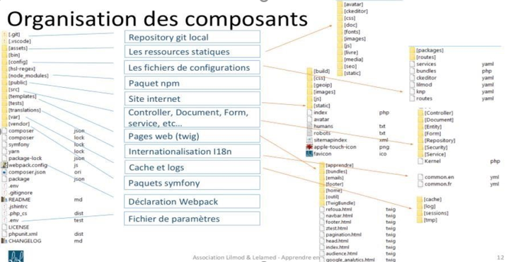
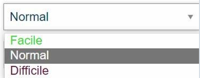

Contexte et présentation de l'entreprise
° Lilmod & Lelamed est une Association à but non lucratif soumise au régime de la loi du premier juillet 1901 sur les associations.
° Lilmod & Lelamed est une application Internet gratuite et sans engagement destinée à faciliter l'apprentissage de l'hébreu et la compréhension du Tanakh et du Talmud au travers de sa bibiliothèque, de jeux,d'exemples et de leçons.
° C’est petite équipe de trois personnes, membres fondateurs de Lilmod & Lelamed.
Le Conseil d'Administration est composé de :
• Laurent HADJADJ - Architecte d'Entreprise - Président ;
• Daniel MAZOUZ - Docteur en Médecine et Enseignant - Secrétaire Générale ;
• Claude HADJADJ - Comptable - Responsable Administratif et Financier ;
Lilmod & Lelamed soucieuse de la confidentialité et de la sécurité des informations personnelles et s'efforce de mettre oeuvre, par tous les moyens raisonnables, une protection adaptée pour les protéger
Cette politique de confidentialité s'applique à toutes les données collectées par le site, c’est à dire à tous les contenus et aux pages présentes du site lilmod-lelamed.fr.
Mission du projet
° L’objectif de ce projet est de créer le célèbre jeu memory qui est de deviner chaque paire de cartes. Plusieurs modes sont proposés au joueur ; 3 niveaux à découvrir. Pour chaque partie, on comptabilise le nombre de coups. Lorsque le joueur a retourné 2 cartes, si ces dernières sont identiques, elles disparaissent. Le jeu s’arrête lorsque toutes les cartes ont été devinées.
° Comprendre l’environnement de travail à travers la machine virtuelle.
- Dessiner une maquette du projet
- Savoir décrire les processus et définir les algorithmes utiles ;
- Savoir construire le model de conception de données (MCD) définition de la base de données et des données.
- Savoir utiliser HTML5 dans un contexte TWIG (+ template), utiliser les media-queries (Responsive) et CSS pour les pages de présentation ;
- Savoir gérer l’injection d’objet depuis les contrôleurs dans une page TWIG ;
- Différentes catégories tel que associations images, mots, vocabulaire,verbe
- Différents niveaux
- Utiliser un compteur de coups
- A la fin de la partie, proposer un classement à l’utilisateur en fonction de sa ville
° Les ressources disponibles étaient :
HTML 5
,CSS 3
,Zurb Foundation
,Symfony
,Twig
jQuery
,angularJS
,mongoDB
Voici quelques pages du résultats






{kind=link}
{kind=link}